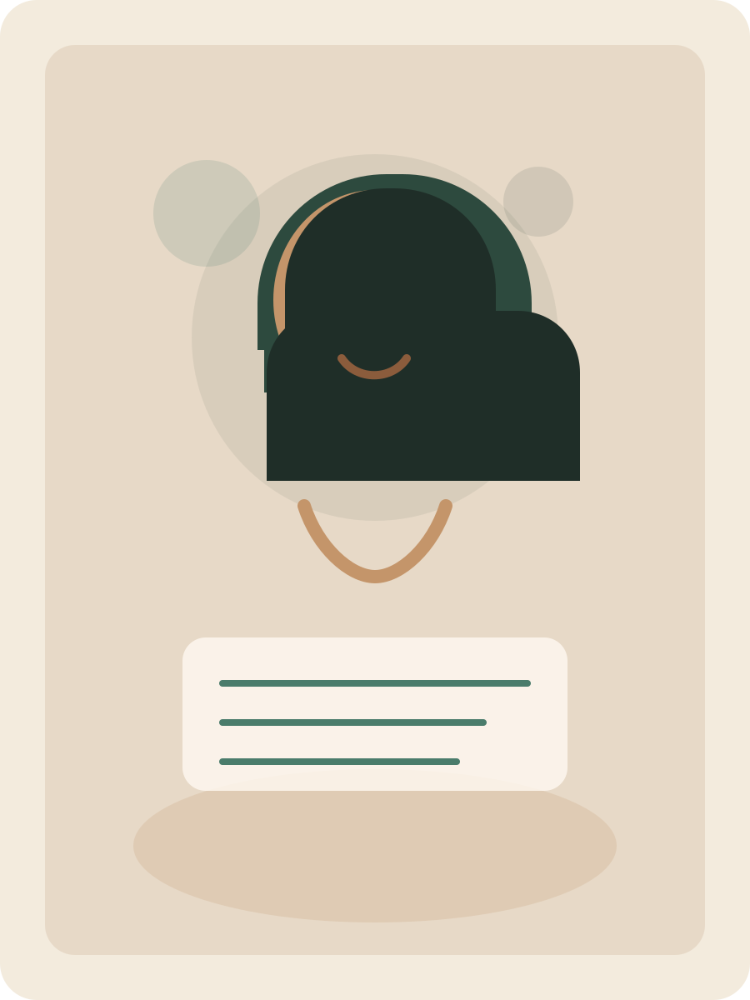

Psykolog · Coach · Natursamtaler
Livet kan bli overveldende. Stress, sorg, relasjoner, usikkerhet eller følelsen av å ha mistet retning kan gjøre det vanskelig å finne fotfeste.
Gjennom samtaler, refleksjon og naturens ro skaper vi et trygt rom hvor du kan forstå deg selv bedre og bevege deg videre i ditt eget tempo.
«Det er ikke tankene våre som former livet mest. Det er forholdet vi har til dem. Ett skritt av gangen, sammen.»
«Samtaler som skaper ro, innsikt og varig endring. Med faglig trygghet, varme og a ekte tilstedeværelse.»

Om meg
Gjennom hele mitt yrkesliv har jeg vært opptatt av én ting: å hjelpe mennesker.
Jeg har en mastergrad i klinisk psykologi og mange års erfaring fra arbeid med mennesker i krevende livssituasjoner — fra akuttpsykiatri til psykisk helsevern for barn og unge.
Jeg har møtt mennesker som strever med angst, stress, sorg, relasjonelle utfordringer, livskriser og traumer. Jeg har ledet sorggrupper for barn som har mistet en nær omsorgsperson, og for foreldre og voksne som har opplevd alvorlig tap.
Gjennom disse erfaringene har jeg lært at mennesker sjelden trenger å bli fikset. De trenger et trygt rom — et sted å kjenne etter, sortere tanker og følelser, og gradvis finne tilbake til sin egen styrke.
Mastergrad i klinisk psykologi
Erfaring fra akuttpsykiatri og BUP
Videreutdanning innen psykisk helse
Sertifisert i naturbasert terapi og coaching
Noen ganger begynner de viktigste endringene med en enkel samtale.
Ett møte. Ett steg. Én person som går et lite stykke av veien sammen med deg.
Hva jeg tilbyr
Jeg vet at behovet for hjelp ikke alltid passer med lange ventelister og stive avtaler. Hos meg er det mulig å få rask oppfølging og fleksible avtaler.
Personlige samtaler tilpasset deg — der du er akkurat nå. Vi setter av tid til å forstå hva du bærer på og hva du trenger fremover.
Vi går side om side ute i naturen mens vi snakker. Mange opplever at det er lettere å åpne seg i bevegelse — samtalen flyter friere, skuldrene senker seg.
AnbefaltVideomøter som passer inn i hverdagen din — fra hjemmekontor, pauserommet eller stuen. Samme nærhet og fokus, uansett avstand.
Lav terskel og enkelt tilgjengelig. Noen ganger er en god samtale i telefonen akkurat det som trengs for å finne retning igjen.
Vanlige temaer vi kan jobbe med:
Naturen som rom
Mange opplever at det er lettere å snakke når de går side om side med noen fremfor å sitte ansikt til ansikt på et kontor. Når kroppen er i bevegelse, blir det ofte lettere å få kontakt med egne tanker og følelser.
Forskning viser at tid i naturen kan redusere stress, bidra til bedre følelsesregulering og senke kroppens aktiveringsnivå. Men naturen tilbyr også noe vanskeligere å måle — avstand til støyen. Den minner oss på å puste litt dypere og komme nærmere det som er viktig.
I en verden med høyt stressnivå og konstante krav kan naturen hjelpe oss finne tilbake til balanse — ikke ved å fjerne utfordringene, men ved å skape bedre forutsetninger for å møte dem.
Hos meg blir du møtt akkurat slik du er.
Ta kontakt
Fyll ut skjemaet, og jeg tar kontakt så raskt som mulig. Du kan også nå meg direkte på e-post eller telefon.